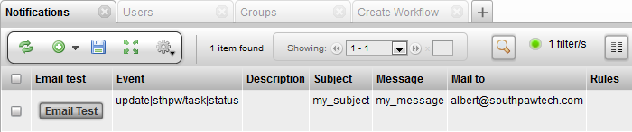

The TACTIC config file stores settings such as directory locations and email server information.
The name of the TACTIC config file and the location can be found here:
| Filename | Operating System | Location |
|---|---|---|
tactic-conf.xml | Windows or Linux | /config |
note: Prior to TACTIC 3.8, the TACTIC config file is named differently for each operating system. See the table below:
| Filename | Operating System | Location |
|---|---|---|
tactic_win32-conf.xml | Windows | /project/config |
tactic_linux-conf.xml | Linux | /project/config |
For Windows, it is C:\ProgramData\Southpaw\Tactic\data by default for Enterprise Edition.
Otherwise, it is usually /home/tactic/tactic_data by default on a Linux machine. Southpaw supplies the TACTIC config file as a template on installation. Once installed, this file can be modified to reflect any of the options described in the sections below. Most of the parameters can be modified in the UI through Global > System Config as well. If an option tag does not exist in a particular section in your config file, TACTIC will assume a default or it can simply be added in.
Install
This section defines the hostname for the server (if different from "localhost") as well as the temp directory to be used for TACTIC. The tmp_dir is where temporary files are stored as well as the TACTIC log files.
<install>
<hostname>localhost</hostname>
<tmp_dir>/home/tactic/tactic_temp</tmp_dir>
<default_project>default_project_code</default_project>
<include_js>/context/some_external_lib.js</include_js>
</install>HOSTNAME | This section defines the hostname for the server (if different from "localhost"). The hostname is what TACTIC listens to. |
TMP_DIR | The temp directory to be used by TACTIC. |
DEFAULT_PROJECT | Default project when the user browse the TACTIC base url. |
INCLUDE_JS | You can include one or more external js files you want to make use of separated by ,. |
Services
This section defines information regarding the services external to TACTIC.
<services>
<mailserver>smtp8.sympatico.ca</mailserver>
<mail_user>some_username</mail_user>
<mail_password>some_password</mail_password>
<mail_port>a port number other than 25</mail_port>
<mail_sender_disabled>true</mail_sender_disabled>
<mail_tls_enabled>true</mail_tls_enabled>
<python>python</python>
<python_path>/home/apache/custom</python_path>
<render_submit_class>sites.racoon.modules.command.CustomRenderSubmit</render_submit_class>
<process_count>3</process_count>
<thread_count>50</thread_count>
<process_time_alive>30</process_time_alive>
<system_class></system_class>
</services>MAILSERVER | The URL of the SMTP mail server |
MAIL_PASSWORD | The password for accessing the SMTP mail server that requires authentication |
MAIL_USER | The user name for accessing the SMTP mail server that requires authentication |
MAIL_PORT | The port for the SMTP mail server (if different that 25) |
MAIL_SENDER_DISABLED | disable using the sender name in sending of email in case the email server does not allow sender’s email not owned by the sender |
MAIL_TLS_ENABLED | enable TLS (Transport Layer Security) for the connection to email server |
PYTHON | The root path of the Python installation. "python" is usually sufficient. |
PYTHON_PATH | The server-side location for client files. This location can also be mounted from a shared volume if you wish to maintain stricter server access for clients. For multiple paths, separate with | .e.g. /home/apache/custom|/home/apache/custom_two |
RENDER_SUBMIT_CLASS | The class used for render submissions. |
PROCESS_COUNT | The number of processes the TACTIC service would spawn. It needs to match the number of ports used in the load balancing scheme in the Apache configuration. |
THREAD_COUNT | The number of worker threads generated for each instance of the TACTIC process. If not set, it defaults to 10 which is too low to handle rapid requests.. TACTIC’s default is 50 on new installation. A good balance of process_count and thread_count can improve response time of the server. |
PROCESS_TIME_ALIVE | The number of minutes a TACTIC process gets respawned. It helps with the memory consumption inherent with a long-running Python process. |
SYSTEM_CLASS | Allows for an override some of the low level system functionality. For example mkdirs and exists |
Security
This section defines information regarding the services external to TACTIC.
<security>
<version>2</version>
<ticket_expiry>10 hour</ticket_expiry>
<authenticate_mode>default</authenticate_mode>
<authenticate_class></authenticate_class>
<authenticate_version>2</authenticate_version>
<case_insensitive_login>>false</case_insensitive_login>
<max_login_attempt>3</max_login_attempt>
<account_lockout_duration>30</account_lockout_duration>
<auto_create_user>false</auto_create_user>
<api_require_password>true</api_require_password>
<api_password></api_password>
<allow_guest>false</allow_guest>
<guest_mode>restricted</guest_mode>
<guest_url_allow>/guest_view</guest_url_allow>
</security>TICKET_EXPIRY | The number of hours a login ticket expires after |
AUTHENTICATE_MODE | default: This basically just looks at the tactic database for information. autocreate: This autocreates the first time and then leaves the information alone. cache: This caches the information to the tactic database on every login |
AUTHENTICATE_CLASS | A full class path to override the default class "pyasm.security.TacticAuthenticate". Note: Your custom class needs to override the method verify() which takes two arguments: login and password. |
AUTHENTICATE_VERSION | 1 is the old way of authentication. 2 is the new way. |
CASE_INSENSITIVE_LOGIN | If set to true, it allows case insensitive login name. When autocreate mode is used, all login entries created will have a lowercase login name. It can be used in combination with Active Directory setup. |
MAX_LOGIN_ATTEMPT | Number of times login attempt can fail before account is locked out. |
ACCOUNT_LOCKOUT_DURATION | Number of minutes a user account is locked out for failed login attempt if specified. |
AUTO_CREATE_USER | Auto create user in TACTIC during authentication phase if it does not exist. (Deprecated: use "authenticate_mode" in new way of authentication) |
API_REQUIRE_PASSOWRD | Client API script requires password to login or not |
API_PASSWORD | A generic Client API password can be set here |
ALLOW_GUEST | true or false can be set to allow guest to access without login |
GUEST_MODE | full or restricted can be set. In restricted mode, a /guest relative URL is expected to be defined in Custom URL to restrict the guest to only see a particular view |
GUEST_URL_ALLOW | In full mode, one can have multiple relative URLs predefined for guest, separated by |. |
Database
<database>
<vendor>PostgreSQL</vendor>
<server>localhost</server>
<port></port>
<user>postgres</user>
<password>none</password>
<sobject_database>sthpw</sobject_database>
<pool_max_connections>0</pool_max_connections>
</database>VENDOR | The database vendor (software) the database will be installed on. |
SERVER | The hostname of the server. This is localhost if TACTIC and the database are on the same server |
PORT | The database connection port |
USER | The user name for the database connection |
PASSWORD | The password for the database connection. |
SOBJECT_DATABASE | The database where SObject definitions will be stores |
POOL_MAX_CONNECTIONS | The pool of connections available for connecting to the database. 0 is recommended for PostgreSQL implementation |
Perforce
<perforce>
<web_dir>perforce</web_dir>
<p4>p4</p4>
<port>1666</port>
</perforce>WEB_DIR | The webdir for the perforce connection. |
P4 | |
PORT | The port to be used for connection to perforce. |
Look
This setting provides a method of setting the TACTIC skin in the server for all users. In this example, the BON_NOCHE palette specified:
<look>
<palette>BON_NOCHE</palette>
</look>Other available palettes are AQUA, DARK, BRIGHT, DEFAULT, SILVER, AVIATOR, and ORIGAMI. Alternatively, the whole palette can be customized as follows:
<look>
<palette>{
'color': '#000000', # main font color
'color2': '#FFFFFF', # secondary font color
'color3': '#FFFFFF', # tertiary font color
'background': '#FDEEA7', # main background color
'background2': '#1A9481', # secondary background color
'background3': '#003D5c', # tertiary background color
'border': '#666666' # main border color
}</palette>
</palette>
</look>The side bar color may not change right away until the next TACTIC service restart.
PALETTE | The default palette setting for all TACTIC users. |
Checkin
TACTIC uses the following directory and path settings for internal and client interaction. They are included in the tag (for checkins).
VERSIONLESS_MODE | COPY or SYMLINK: Turn on versionless mode for checkins for all projects. To set the versionless mode per project, go to PROJECT ADMIN → PROJECT SETTINGS and add a the key VERSIONLESS_MODE and the value: COPY or SYMLINK. |
ASSET_BASE_DIR | The directory where the assets are stored in the TACTIC server. |
WEB_BASE_DIR | The root URL that maps the asset_base_dir directory |
WIN32_LOCAL_BASE_DIR | The base directory in Windows client machines |
LINUX_LOCAL_BASE_DIR | The base directory in Linux client machines |
WIN32_SANDBOX_DIR | The default sandbox directory in the Windows client machines (it can be overridden by Remote Repo) |
LINUX_SANDBOX_DIR | The default sandbox directory in the Linux client machines (it can be overridden by Remote Repo) |
WIN32_CLIENT_REPO_DIR | Maps the asset_base_dir directory as seen by the Windows client. For example, if asset_base_dir is on a Linux server with a path like "/home/apache/assets" but from the Windows client, it is mapped as "Z:/assets", then "Z:/assets" should be the value for this setting. By default, this path is empty because the system assumes the client and server are on the same Windows machine. |
LINUX_CLIENT_REPO_DIR | Same as win32_client_repo_dir except it is from the perspective of a Linux client machine |
WIN32_CLIENT_HANDOFF_DIR | Windows client-side handoff directory for Client API transactions. (Find out more about the handoff directory below.) |
WIN32_SERVER_HANDOFF_DIR | Windows server-side handoff directory for Client API transactions |
LINUX_CLIENT_HANDOFF_DIR | Linux client-side handoff directory for Client API transactions |
LINUX_SERVER_HANDOFF_DIR | Linux server-side handoff directory for Client API transactions |
SUDO_NO_PASSWORD | It controls whether sudo can be run to change the user id and group id of the files checked in. It is particularly important if you want to ensure files checked in to the TACTIC repository are owned by TACTIC and not overwritable by just any users. If set to true, "no password" should be enabled for the user TACTIC is run as in the OS. e.g. For Fedora, assuming you have sudo installed: In the file /etc/sudoers, the following line should be uncommented: %wheel ALL=(ALL) NOPASSWD: ALL In the file /etc/group, apache should be added to the group wheel wheel:x:10:root,apache |
VERSION_PADDING | padding of 3 or more can be set for checked-in files |
THE HANDOFF DIRECTORIES
Handoff directories can be seen by both the server and the client machines. They are used for 3D checkins and client API interactions, and are important for specifying how the client and server sides see the same location.
For example, if you have the location //192.168.0.105/handoff available on your network and it is mounted as /home/apache/handoff on a server, then it would be important to include the following entries:
<win32_client_handoff_dir>//192.168.0.105/handoff</win32_client_handoff_dir> <win32_server_handoff_dir></win32_server_handoff_dir> <linux_client_handoff_dir></linux_client_handoff_dir> <linux_server_handoff_dir>/home/apache/handoff</linux_server_handoff_dir>
DIRECTORY CONFIGURATION EXAMPLES
Example 1
The assets directory is located on the TACTIC server and allows for read-only access from client machines in the local subnet.
The Windows and Linux client_handoff_dir looks directly to the server for the available "handoff" share
<checkin>
<asset_base_dir>/home/apache/assets</asset_base_dir>
<web_base_dir>/assets</web_base_dir>
<win32_local_base_dir>C:/sthpw</win32_local_base_dir>
<linux_local_base_dir>/tmp/sthpw</linux_local_base_dir>
<win32_sandbox_dir>C:/sthpw/sandbox</win32_sandbox_dir>
<linux_sandbox_dir>/tmp/sthpw/sandbox</linux_sandbox_dir>
<win32_client_repo_dir>//192.168.0.105/apache/assets</win32_client_repo_dir>
<linux_client_repo_dir>/usr/assets</linux_client_repo_dir>
<win32_client_handoff_dir>//192.168.0.105/apache/handoff<win32_client_handoff_dir>
<win32_server_handoff_dir></win32_server_handoff_dir>
<linux_client_handoff_dir>/home/apache/handoff</linux_client_handoff_dir>
<linux_server_handoff_dir>/home/apache/handoff</linux_server_handoff_dir>
<version_padding>3</version_padding>
</checkin>Example 2
The Windows and Linux client_handoff_dir is mapped/mounted to the TACTIC server_handoff_dir
<checkin>
<asset_base_dir>/mnt1/assets</asset_base_dir>
<web_base_dir>/assets</web_base_dir>
<win32_local_base_dir>C:/sthpw</win32_local_base_dir>
<linux_local_base_dir>/tmp/sthpw</linux_local_base_dir>
<win32_sandbox_dir>C:/sthpw/sandbox</win32_sandbox_dir>
<linux_sandbox_dir>/tmp/sthpw/sandbox</linux_sandbox_dir>
<win32_client_repo_dir>z:/assets</win32_client_repo_dir>
<linux_client_repo_dir>/assets</linux_client_repo_dir>
<win32_client_handoff_dir>z:/tactic_handoff<win32_client_handoff_dir>
<win32_server_handoff_dir></win32_server_handoff_dir>
<linux_client_handoff_dir>/tactic_handoff</linux_client_handoff_dir>
<linux_server_handoff_dir>/home/apache/tactic_handoff</linux_server_handoff_dir>
<version_padding>3</version_padding>
</checkin>For development, test, or evaluation purposes, there is no need to run
TACTIC as a service. The startup_dev.py script should suit these
purposes adequately. However, for production, it is highly recommended
to run TACTIC as a service.
In the <TACTIC_INSTALL_DIR>/src/install directory, there is a
directory called service, with two files:
[multiblock cell omitted] |
[multiblock cell omitted] |
This document discusses security layers that can be implemented on top of the TACTIC service.
Services covered
Southpaw Technology does not provide any support, either direct or implied, for remote access.
Any application that is put on a public network can potentially be compromised, even with rigorous security testing. TACTIC, in its current version, has not been production tested for security scenarios outside of completely trusted networks like intranets. This document does not make any claims that TACTIC has any level of security beyond what its current architecture design allows.
TACTIC is a bandwidth-intensive application, and client-server performance will be affected by any number of network issues between the client and the server.
There are numerous elements of functionality that go beyond utilizing HTTP port access in enterprise applications of TACTIC. Many 3rd party applications that communicate with TACTIC will produce unexpected behavior when utilized in a fashion that was not intended for the product, such as use in remote applications.
TACTIC on public networks
HTTP transport co-services can be configured to provide authentication services to TACTIC.
HTTP zone access
The simplest form of HTTP security authentication zone access. To enable different security scenarios, the HTTP service must be configured for use of these scenarios. Configuration files (usually called .htaccess files) contain a number of settings that can be used for integrating the application with the capabilities of the Web server.
When enabling password zone access, the password is transmitted to the server in cleartext, unless TLS is enabled.
Apache
Apache uses either directives for directory access in the httpd.conf file, or can be enabled on a per-directory basis, with the use of a .htaccess file. Either way can be used. Apache provides modules for LDAP, MySQL, flat-file, ADS, and many other authentication mechanisms.
IIS
IIS can be configured at the top level through the IIS snap-in, or by individual configuration file. IIS 7 uses a file called Web.config to hold settings for integration with applications. The Web.config file contains information that control module loading, security configuration, session state configuration, and application language and compilation settings.
Overview
TACTIC can be configured to use the SSL transport layer. This layer is independent of the TACTIC service, and can be tailored to the needs of the deployment without major changes to the TACTIC service.
Both major HTTP servers can be configured for SSL support. There are many materials online available for configuration of the various flavors of these two major HTTP service projects.
Since there are many different versions of these servers, a simple search of Windows 2003 IIS SSL as an example will yield many HOWTOs and configuration references. Please consult the documentation for these services.
The configuration examples that have been set out below are by no means complete. Depending on the HTTP service used, and the platform used, these examples may not be enough set directives or steps to properly complete the SSL process. They are given as guides.
Steps
The major steps to utilizing SSL in with TACTIC are
Configuration
TACTIC configuration
The SSL HTTP layer is kept separate from TACTIC via a proxy, so the only configuration change required of TACTIC is in the tactic_(OS).conf file. The <security><protocol> directive must tell TACTIC to expect an SSL delivery.
<security>
<protocol>https</protocol>
</security>The setting can be set to either “http�? or “https�?.
Apache
The apache project uses mod_ssl as a modular way of inserting SSL capabilities into the HTTP service.
The example OS is Fedora 11. “Yum�? is used to add SSL to apache.
[root@lindsay conf.d]# yum install mod_ssl Loaded plugins: refresh-packagekit … Complete! [root@lindsay conf.d]#
Once mod_ssl is added, the Apache configuration should contain at least these directives. The example directives are contained in conf.d/ssl.conf in the Fedora 11 example. File locations will vary according to OS.
LoadModule ssl_module modules/mod_ssl.so Listen 443 SSLPassPhraseDialog builtin SSLSessionCache shmcb:/var/cache/mod_ssl/scache(512000) SSLSessionCacheTimeout 300 SSLMutex default SSLRandomSeed startup file:/dev/urandom 256 SSLRandomSeed connect builtin SSLCryptoDevice builtin <VirtualHost _default_:443> SSLEngine on SSLProtocol all -SSLv2 SSLCipherSuite ALL:!ADH:!EXPORT:!SSLv2:RC4+RSA:+HIGH:+MEDIUM:+LOW SLCertificateFile /etc/pki/tls/certs/localhost.crt SSLCertificateFile /etc/pki/tls/certs/localhost.crt SSLCertificateKeyFile /etc/pki/tls/private/localhost.key
As soon as its added and the server is restarted, the SSL service becomes available on the network interface that apache is running on.
IIS
IIS can be configured at the top level through the IIS snap-in, or by individual configuration file.
To configure SSL on a Web server or a Web site
\1. In IIS Manager, double-click the local computer, and then double-click the Web Sites folder. 2. Right-click the Web site or file that you want to protect with SSL, and then click Properties. 3. Under Web site identification click Advanced. 4. In the Advanced Web site identification box, under Multiple identities for this Web site, verify that the Web site IP address is assigned to port 443, the default port for secure communications, and then click OK. Optionally, to configure more SSL ports for this Web site, click Add under Multiple identities of this Web site, and then click OK. 5. On the Directory Security or File Security tab, under Secure communications, click Edit. 6. In the Secure Communications box, select the Require secure channel (SSL) check box. 7. To enable SSL client certificate authentication and mapping features, select the Enable client certificate mapping check box, click Edit, add the 1-to-1 or many-to-1 mappings you need, and then click OK three times.
Secure transaction processing
Processing transactions securely on the web means that there is a need to be able to transmit information between the web site and the customer in a manner that makes it difficult for other people to intercept and read. SSL, or Secure Sockets Layer, takes care of this. It works through a combination of programs and encryption/decryption routines that exist on the web services host, and in browser programs (like Firefox and Internet Explorer)
Performance
TLS has encryption/decryption routines as part of its security. These routines can be bandwidth/CPU intensive. Any usage of TLS can compromise TACTIC, if the routines are incorporated into the same host as the TACTIC service. See guides on load-balancing for details on offsetting this.
Overview
A VPN will provide the most trouble-free access to TACTIC remotely. In this scenario, the authentication/encryption routines are completely removed from the realm of TACTIC configuration. This not only helps to isolate TACTIC from complex configuration issues, but also allows for isolated troubleshooting of remote access issues.
PPTP
PPTP is Microsoft supplied product. If an enterprise deployment of TACTIC includes ADS authentication, then PPTP can be used as the VPN transport layer. Usually, deployment is quite easily done. In PPTP, usernames and passwords are used to complete the VPN link. PPTP can be considered the “road-warrior�? VPN, meaning that it is easily deployed to users.
IPsec
Ipsec is a suite of protocols used to secure data between hosts. A VPN can be transported on top of this protocol. Typically, two remote hosts are configured to communicate with each other, such as routers. This type of VPN is typically used to connect two offices together.
Hardware VPNs
Hardware VPNs such as offerings provided by companies like Cisco, can be easily implemented. These Systems are designed for minimal ramp-up, and can be implemented quickly.
Security Terms
“is a form of active eavesdropping in which the attacker makes independent connections with the victims and relays messages between them, making them believe that they are talking directly to each other over a private connection, when in fact the entire conversation is controlled by the attacker. The attacker must be able to intercept all messages going between the two victims and inject new ones, which is straightforward in many circumstances (for example, an attacker within reception range of an unencrypted Wi-Fi wireless access point, can insert himself as a man-in-the-middle).�?
SSL (Wikipedia)
“Transport Layer Security (TLS) and its predecessor, Secure Sockets Layer (SSL), are cryptographic protocols that provide security for communications over networks such as the Internet. TLS and SSL encrypt the segments of network connections at the Transport Layer end-to-end.�?
Cleartext (Wikipedia)
Cleartext is transmitted, unencrypted text.
“In a cryptosystem, weaknesses can be introduced through insecure handling of plaintext, allowing an attacker to bypass the cryptography altogether. Plaintext is vulnerable in use and in storage, whether in electronic or paper format. “
PPTP (wikipedia)
The Point-to-Point Tunneling Protocol (PPTP) is a method for implementing virtual private networks. PPTP uses a control channel over TCP and a GRE tunnel operating to encapsulate PPP packets.
The PPTP specification does not describe encryption or authentication features and relies on the PPP protocol being tunneled to implement security functionality. However the most common PPTP implementation, shipping with the Microsoft Windows product families, implements various levels of authentication and encryption natively as standard features of the Windows PPTP stack. The intended use of this protocol is to provide similar levels of security and remote access as typical VPN products.
IPSEC (Wikipedia)
Internet Protocol Security (IPsec) is a protocol suite for securing Internet Protocol (IP) communications by authenticating and encrypting each IP packet of a data stream. IPsec also includes protocols for establishing mutual authentication between agents at the beginning of the session and negotiation of cryptographic keys to be used during the session. IPsec can be used to protect data flows between a pair of hosts (e.g. computer users or servers), between a pair of security gateways (e.g. routers or firewalls), or between a security gateway and a host.[1]
TACTIC provides the ability to easily connect to any active directory installation for both authentication and for synchronization of user data. With a set of directives in the TACTIC configuration file, it is possible to connect to Active Directory for authentication and user information.
This synchronization takes place at login time. At this point, TACTIC takes the desired information for a particular user and caches it into the "sthpw/login" search type. Subsequent requests would normally use an issued ticket given at login time. On these requests, no further querying of active directory is needed until the ticket expires or the user signs out the application.
The active directory modules make use of win32 libraries for python. These must be installed in order for the connection to active directory to function properly
There are a number of directives in the TACTIC config file that can be used to configure the active directory settings. These allow you to adjust TACTIC behavior to suit the needs of the facility.
In order to turn on active directory authentication, you must change the authenticate class to the following:
authenticate_class: tactic.active_directory.ADAuthenticate
The following directives can be set under the active directory category:
domains: This is a "|" delimited list of the domains that exist in the network. If specified, a selection box for domains will be added to the login page.
*allow:*can be "all", which allows everyone to log in if authentication is approved or it can point to the name of a specific Active Directory attribute that must be set to True. If a person is denied access, the will receive the error: "Permission denied due to insufficient Active Directory clearance".
*default_groups:*defines the default groups that a user will belong to if none is specified. Multiple groups are delimited by "|".
*default_license_type:*determines the default license type for a user if none is specified in the Active Directory attribute "tacticLicenceType".
Below is an example of a typical entry in the TACTIC config file:
<active_directory>
<domains>xxx|yyy|zzz</domains>
<allow>tacticEnabled</allow>
<default_groups>client</default_groups>
<default_license_type>user</default_license_type>
</active_directory>
Allow anyone to login:
<active_directory>
<allow>all<allow>
</active_directory>
Allow anyone to login and will be put in the "client" group if user has no groups specified.
<active_directory>
<allow>all</allow>
</active_directory>
Only allow thos with the attibute tacticEnabled in Active Directory set to "true"
<active_directory>
<allow>tacticEnabled</allow>
</active_directory>
Enable users to select a domain (xxx, yyy or zzz) in the login screen
<active_directory>
<allow>all</allow>
<domains>xxx|yyy|zzz</domains>
</active_directory>
Active Directory attributes use camel case notation (aaaBbbCcc), while TACTIC users lowercase with underscore separators for columns( aaa_bbb_ccc). In order to maintain consistency within the TACTIC application, a mapping of columns from active directory to TACTIC is provided. The following mappings are made by default:
telephoneNumber | phone_number |
department | department |
displayName | first_name, last_name (broken up) |
tacticLicenceType | license_type |
The Active Directory variable "tacticLicenseType" is a custom variable that indicates which type of license a particular user can occupy in TACTIC. If this attribute is missing from a users active directory profile, then they will be denied a login. This attribute can be used to determine if a particular user in active directory is allowed to login to TACTIC.
The only supported license for this attribute are "user" and "default". Other license types have not yet been implemented yet.
On log in, TACTIC will look at all of the groups that a user belongs to in Active Directory and match those group names to the "ad_login_group" column in the "sthpw/login_group" search type. This grouping list will synchronized at this time, removing the users from groups not specified in Active Directory and add those that are specified. This means that Active Directory is in full control of the groups that a user is part of and therefore must be managed entirely in Active Directory.
For the name of the group, TACTIC only looks at the root of the path to map the group name. For example, an active directory group with the following distinguished name:
memberOf: CN=supervisor,OU=Users,OU=EIS,DC=domain,DC=us,DC=xxxx,DC=com
TACTIC will need only "supervisor" to be entered in the "ad_login_group" column.
If on logging in, the number of users exceeds the number of users in the license, then that user will be denied access and an entry in the "sthpw/login" search type will not be made. However, all other users currently registered can continue to work normally.
TACTIC Service Configuration
Overview
Multiple TACTIC servers can be leveraged in environments where there is heavy report analysis, and where custom TACTIC environments are making heavy use of API and GUI calls. To spread out the load of the requests made, custom API scripts can be run on one TACTIC server, while another TACTIC server can be used to serve GUI requests. The only consideration then with multiple TACTIC machines will be where the database and the asset directories.
Database
TACTIC needs to know where to find assets and asset metadata. To do this, each installation of TACTIC must be able to have direct file system access to assets storage, and network access to the database co-service.
tactic_(os).conf
needs to contain this information.
<database> <server>[DB server IP]</server> </database>
All other settings, covered previously, can be set according to individual requirements of the host machine and environment.
Assets Storage
TACTIC needs to know where to find assets. To do this, each installation of TACTIC must be able to have direct file system access to assets storage. The details of file system management are beyond the scope of this document, but typically are within the realm of the system administrator.
Processes
If the TACTIC server has no other services attached, there is probably room to increase the number of processes running on each machine.
<services> <process_count>6</process_count> </services>
Refer to Reference: TACTIC Default Configuration for the complete sample configuration file.
Refer to Reference: TACTIC Service Configuration Directives for configuration directives.
HTTP Co-service Configuration
Apache
Apache is used for the following sample HTTP configuration for TACTIC. Some configuration knowledge of apache is required.
Permissions – Allowing TACTIC to store and manipulate assets
This section defines the location and availability of the assets directory, which is the primary source of data for the apache server. There is also the declaration of an alias to the TACTIC source directory, which contains various objects that TACTIC uses, such as widget elements.
Alias /context /home/apache/tactic/src/context Alias /assets /home/apache/assets Alias /doc/ /home/apache/tactic/doc/
The section with <Directory> directives defines the access rules for the assets directory and the "/tactic" directory, which is just a conveniently named alias.
<Directory "/home/apache/tactic" >
Options FollowSymLinks
AllowOverride None
Order Allow,Deny
Allow from All
</Directory>
<Directory "/home/apache/assets" >
Options FollowSymLinks
AllowOverride None
Order Allow,Deny
Allow from All
</Directory>Proxying/Rewriting a single process – Redirecting requests to TACTIC
Apache needs to know where to find the proxied TACTIC service in the httpd.conf file. The below configuration takes advantage of only one process being served from port 8081 on the local machine.
The second section, with RewriteRule directives, defines the re-write rules for the TACTIC service, to segregate requests handled by the TACTIC server, from static asset delivery through the HTTP service. These rules channel any requests that are prefixed with the "/tactic" path to the TACTIC server on port 8081.
RewriteRule ^/tactic/(.+)$ http://localhost:8081/tactic/$1 [P,L] RewriteRule ^/tactic http://localhost:8081/tactic/ [P,L] RewriteRule ^/projects/(.+)$ http://localhost:8081/tactic/$1 [P,L] RewriteRule ^/projects http://localhost:8081/tactic/ [P,L]
Proxying/Rewriting multiple processes – Redirecting requests to TACTIC
The proxy configuration can be enhanced with a load balancing scheme for one or more machines. Apache has the ability to randomly select from a list of locations via a rewrite map.
RewriteMap lb rnd:/home/apache/sites/load_balance.txt
This map can feed the rewrite rules with a dynamically assigned host name.
RewriteRule ^/tactic/(.+)$ http://${lb:dynamic}/tactic/$1 [P,L]
RewriteRule ^/projects/(.+)$ http://${lb:dynamic}/tactic/$1 [P,L]
RewriteRule ^/tactic http://${lb:dynamic}/tactic/ [P,L]
RewriteRule ^/projects http://${lb:dynamic}/tactic/ [P,L]The file load_balance.txt is an arbitrarily named and located file that contains the names of servers that will be referred to by the "rnd" function in the Rewrite rules. The "lb:dynamic" reference will be replaced by the name of the server file
The load_balance.txt contains a pipe separated list of hosts named "dynamic"
dynamic localhost:8081|localhost:8082|localhost:8083
This list is dependent on the number of ports that TACTIC is running on, specified by tactic_(OS).conf. Note that apache can proxy from IP addresses or hostnames external to the host that the service is parked on.
On this single line list, add all machines and ports that are running TACTIC. Since the scheme algorithm is random, it does not matter what order the machines/ports are listed in, just that they are actually on the list. In this case, there are multiple TACTIC machines, named "tacticserver01" and "tacticserver02". The example assumes the machine has either DNS entries for these machines or entries in the "hosts" file. IP addresses can also be used.
dynamic tacticserver01:8081|tacticserver02:8081|tacticserver01:8082 # and so on, until all machines/ports are covered
Refer to Reference: Apache Configuration for TACTIC for the complete sample configuration file.
Database Co-service Configuration
PostgreSQL
PostgreSQL is used as the database co-service in the following sample configuration. PostgreSQL has only two configuration files that are required to be examined in order to function with TACTIC; pg_hba.conf and postgresql.conf
Network trust - pg_hba.conf
The pg_hba.conf configuration file contains a list of users and hosts with clearance levels. In the default pg_hba.conf file that comes with TACTIC, the network trust level is set for the most open access by the localhost;
# TYPE DATABASE USER CIDR-ADDRESS METHOD local all all trust # IPv4 local connections: host all all 127.0.0.1/32 trust # IPv6 local connections: host all all ::1/128 trust
In this example, all local connections to PostgreSQL are trusted. This configuration matches the correct configuration required by a single machine.
host all all <TACTIC_HOST_IP_ADDR> trust
Network interface - postgresql.conf.
The postgresql.conf configuration file has a setting that will allow the PostgreSQL service to bind to the particular interface required.
Of concern is the "listen_addresses" attribute.
listen_addresses = 'localhost'
By default, the PostgreSQL service is only bound to the localhost. This is fine for single machine operation of the TACTIC service.
listen_addresses = '*'
This setting or specific IP addresses can be used if the DB service is not on the same machine as the TACTIC service
This document describes how to setup the mail server settings in TACTIC in order for notifications to be sent out as emails.
To setup the SMTP mail server, open the TACTIC config file.
The TACTIC config file is located here:
On Linux:
<TACTIC_INSTALL_DIR>/projects/config/tactic_linux-conf.xml
On Windows:
<TACTIC_INSTALL_DIR>/projects/config/tactic_win32-conf.xml
Go to the <services> section of the config file.
Add the following settings with the prefix <mail…>.
Below is an example of a completed mail config section in bold:
<python>python</python>
<python_path></python_path>
<render_submit_class></render_submit_class>
<render_dispatcher></render_dispatcher>
<system_class></system_class>
<pool_max_connections>3</pool_max_connections>
<process_count>3</process_count>
| The URL of the SMTP mail server |
| The password for accessing the SMTP mail server that requires authentication |
| The user name for accessing the SMTP mail server that requires authentication |
| The port for the SMTP mail server (if different that 25) |
| disable using the sender name in sending of email in case the email server does not allow sender’s email not owned by the sender |
| enable TLS (Transport Layer Security) for the connection to email server |
Go to the Notifications view under:
Admin Views → Site Admin → Notifications
Click on the green plus button on the tool shelf to insert new a notification.
Fill in the following the minimum fields to create a test notification:

Click on the Email Test button to send out a test email to the recipient.
For further details on setting up advanced notifications, please refer to the doc titled: Advanced Notification Setup.
The aim of this document is to be able to configure Apache to proxy TACTIC on a UNIX machine. For Apache on Windows machines, there may be some slight differences in behavior or steps.
The TACTIC host machine should have the following prerequisites
The HTTP configuration assumes that the main server is being used to proxy TACTIC requests, without SSL or virtual servers. TACTIC requires that the appropriate modules or 3rd party modules are activated.
This document assumes that TACTIC has been configured correctly and is functioning as expected. It is assumed that TACTIC is installed with default ports 8081 through 8083. This is the typical default TACTIC configuration.
TACTIC can map to any supported database platform. A single TACTIC installation can map on to any number of external databases and use them as a database resource. These database resources are treated as first class citizens in the TACTIC. All of the features that are inherent to any native TACTIC data are also available to these external database resources. To implement this functionality, db_resource can be used to connect a project to a database resource. It defines the location and connection credentials to access a database server. Database resources can be added under the side bar menu Global → Database Resource.
Specify (or look up) the Database Resource under Admin Views → Global.
The database resource entry in Database Resource contains all the information needed to connect to a database. In order for TACTIC to access another database, it has to have a database resource registered and then it has to be mapped to a project.
In the example below, the new database’s code is named: my_new_db_resource, which is the reference of this entry. Host, which refers to the IP address of the server, is set to be a tested address. The Login and Password are the information used to log in the database.
Since all TACTIC projects have a single database resource that it uses as a persistent store for sObjects. By default, the project will use the same resource as the sthpw database and is defined in the TACTIC config file. However, this can be configured to point to another database resource.
Note that the search type uses a project to find the corresponding database. Any project configured to look at a database resource with the db_resource and database columns. The db resource defines the connection criteria and the column determines which database to connect to that resource.
To add new a database as pure resource database, Specify (or look up) the Add Project and Projects columns under Admin Views → Global → Database Resource.
In the example below, the new database called test_database001 from the db_resource my_new_db_resource has been added to a Project called Testing.
For a project to become a full TACTIC project (complete with separate
URL space: http://<server>/<project> and separate themes an interfaces),
all that is required is the config tables to exist in that database
resource. Thus a database resource can start off as a data source and
then, at any time, be upgraded to a full TACTIC project if that is ever
required by importing the appropriate config tables that the search type
uses in the project to find the corresponding database. The project is
configured to look at a database resource with the db_resource and
database column. The db resource defines the connection criteria and
the column determines which database to connect to on that resource.
In order for TACTIC to access another database, it has to have a database resource registered and then it has to be mapped to a project. This mapping is currently required because all search types are scoped and searched using the notation:
<namespace>/<table>?project=<project>&code=<code>
An example search_type entry would be:
jobs/media?project=my_test_project